List of gestures
all pitches and rhythmic content are close to the original demo, but not exacly the same. For all gesture sounds, it's not neccessary to reproduce the exact same sounding result as the demo recording, it's more important to start with the general gestural direction and make it sound interesteing in your own way.
/////// Bar 3-4, 6-7 \\\\\\\
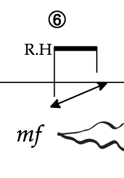
/////// Bar 24-30 \\\\\\\
from orginal demo
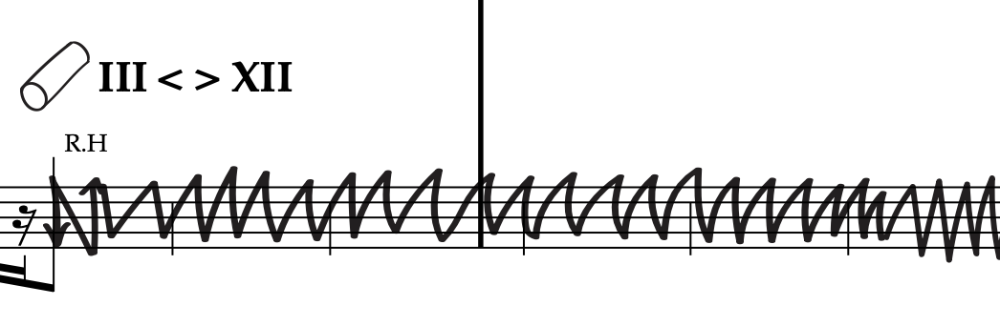
/////// Bar 31 soft spring gesture0 \\\\\\\
from orginal demo

/////// Bar 33 soft spring gesture1 \\\\\\\
from orginal demo

/////// Bar 34 - spring bowing \\\\\\\
from orginal demo
original demo was recorded on an acoustic guitar, but this gesture can also be played on E-guitar.


/////// Bar 41 soft spring gesture3 \\\\\\\
from orginal demo

/////// Bar 47 soft spring gesture4 \\\\\\\
from orginal demo
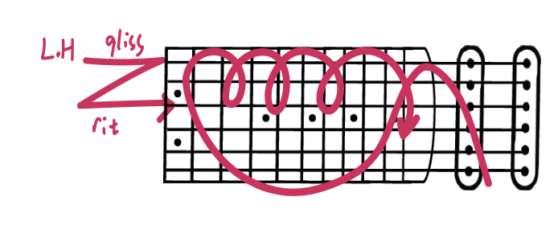
/////// Bar 59-60 \\\\\\\
from orginal demo
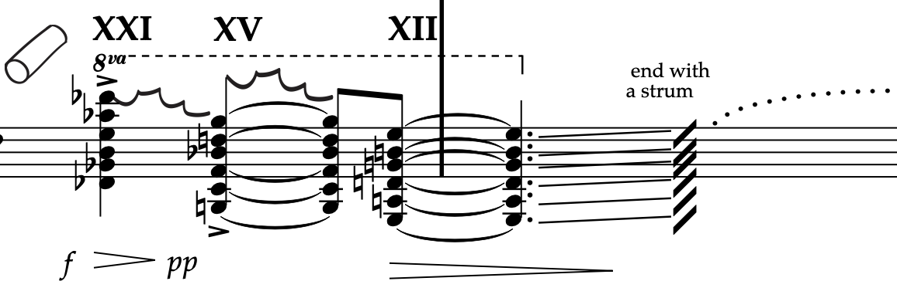
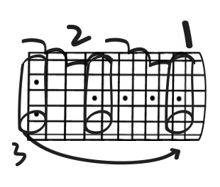
/////// Bar 62 - mindless guitar \\\\\\\

/////// Metal slide dropping sound \\\\\\\
1. dropping only
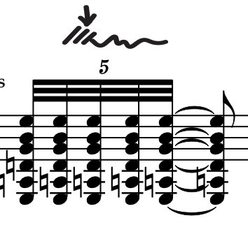
2. dropping and slide after

/////// Bar 81 / 83 metal slide gesture \\\\\\\
from orginal demo
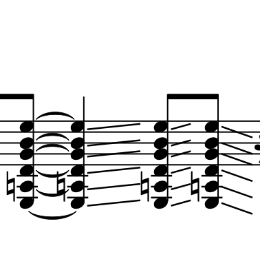
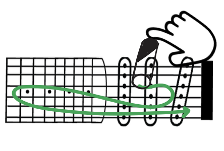
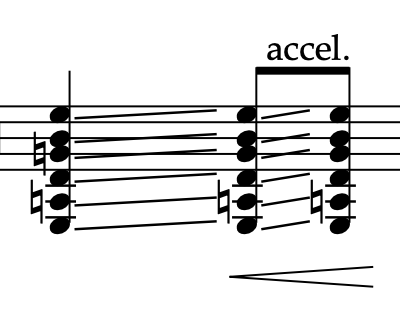
/////// Bar 84 pitch tapping and slide dropping \\\\\\\
from orginal demo
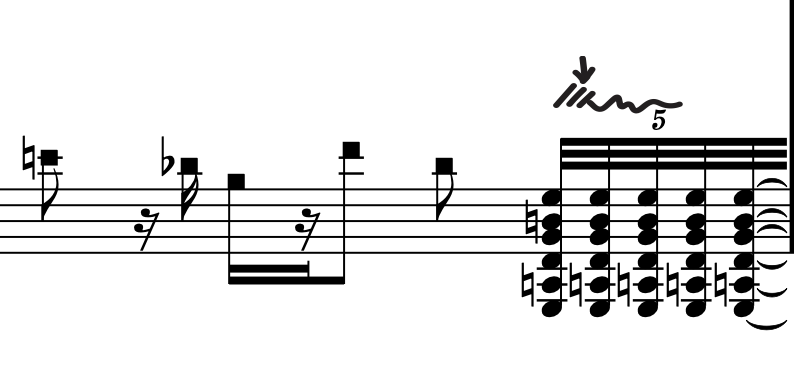
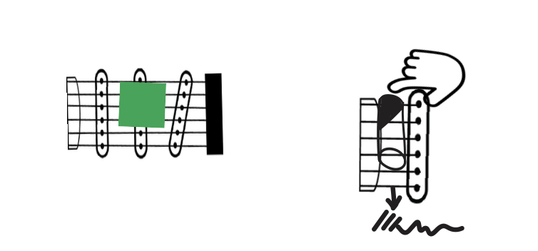
The extra string resonance wil be reduced by slightly damp the string with left hand.- I couldn't do it because I was holding my phone.